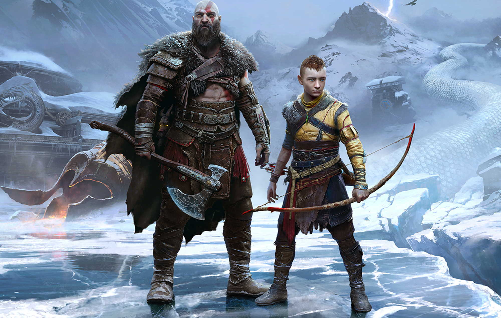
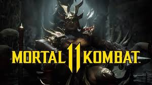
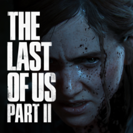

Here are some of PlayStation's most famous games
GOD OF WAR

God of War is an action-adventure game developed by Santa Monica Studio and published by Sony Interavtive Entertainment. It was released worldwide on April
20, 2018, for the PlayStation 4. It is the 8th installment in the God of War Series
GTA 6

Grand Theft Auto 5 is a 2013 action-adventure game developed by Rockstar North and published by Rockstar Games. It is the 7th main entry in the Grand Auto series.
Call Of Duty

Call of Duty is a first-person shooting video game franchise published by Activism.It starting in 2003, as a first focused on games set in World War II.
Mortal Kombat

Mortal Kombat is an American media franchise centered on a series of video games, origanally developed by Midway Games in 1992.
Last Of Us 2

The Last Of Us 2 is a sequal to the acclaimed PS3 game, which transformed developer Naughty Dog-then known for their lighter fare like the Uncharted series The origanal starred Joel, a haunted
who laches on to 14-year-old Ellie as a daughter figure.in this Quest that sees them travese a post apocolyptic America in search of safety